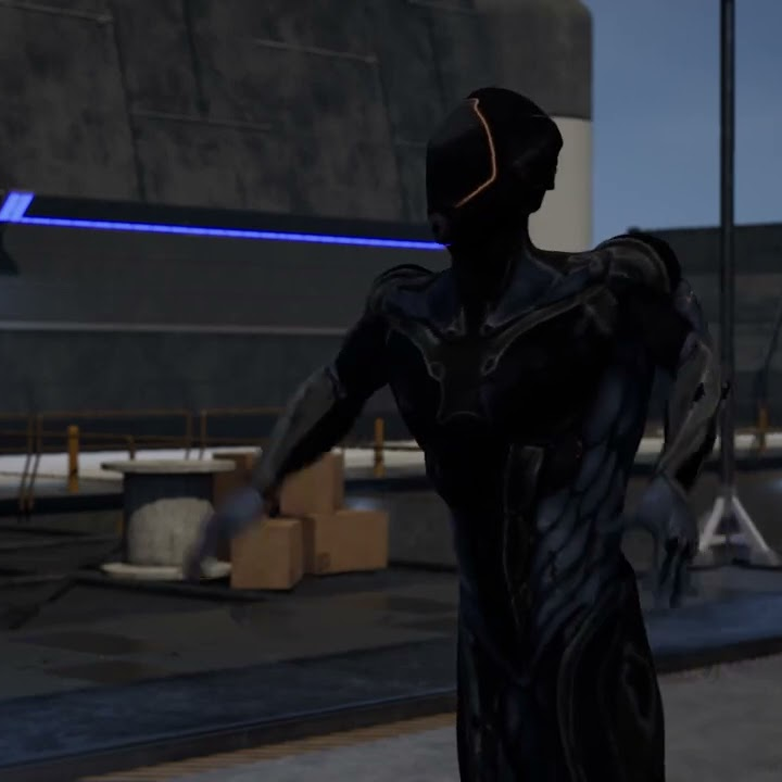

Created as a project for a class, this video showcases two futuristic men have a pretend shoot off, which accidentally ends in tragedy. Animated using Motive, MotionBuilder, and Unreal Engine. Audio and Video done in Adobe Premiere and REAPER.